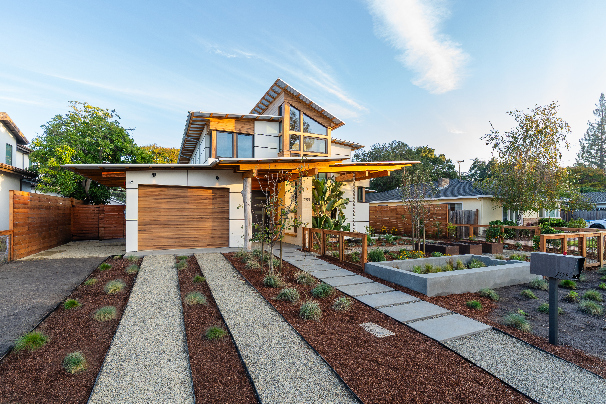
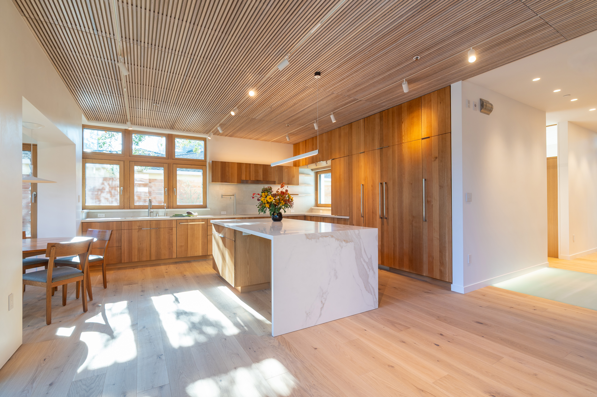
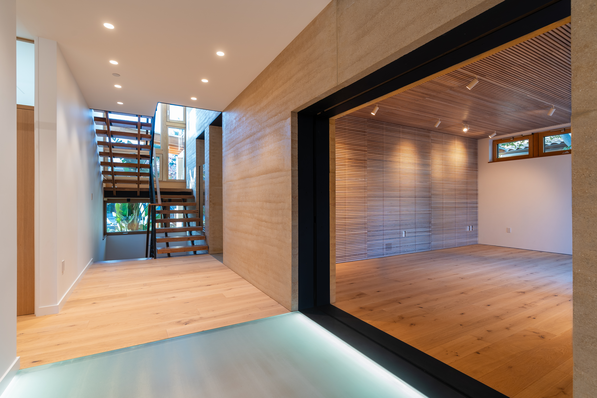

Kevin Yingst
Email
His practice moves between design and research with technical tools, DIY something, and investigative research.



Replace this paragraph with the full project write-up. A short set of sensor nodes recorded particulate matter, noise levels and temperature along a section of underground line, logging continuously over several weeks to build a picture of conditions commuters actually experience.
Swap each <span class="ph"> placeholder above for an <img src="..."> tag pointing at your own photo.
A house made of climate friendly materials for a family. It combines novel use of panelized straw, highly-insulated windows, thermal mass panels, with smart energy systems like radiant heating/cooling and photovoltaic arrays large enough to power the home, charge the cars, and sell back to the grid.
Replace with project details — how altitude and climate changed the build, what was learned from the first house.
Replace with details of your contribution — issues, articles, role on the publication.
Replace with details of your contribution — issues, articles, role on the publication.
(click a section to expand)